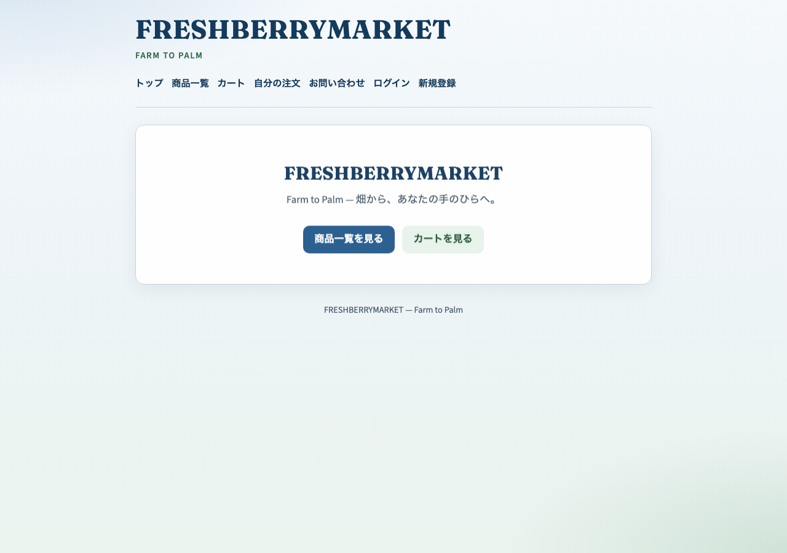
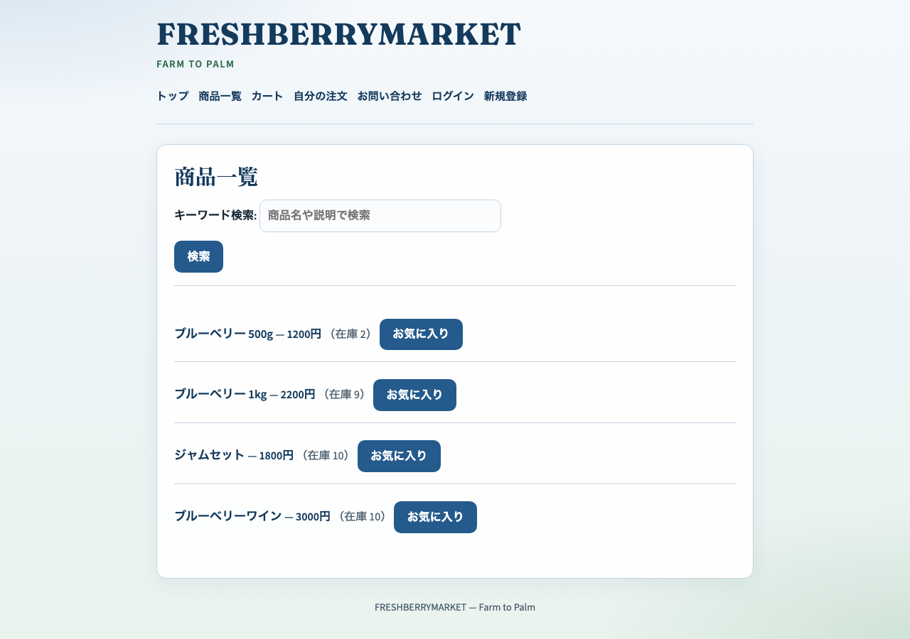
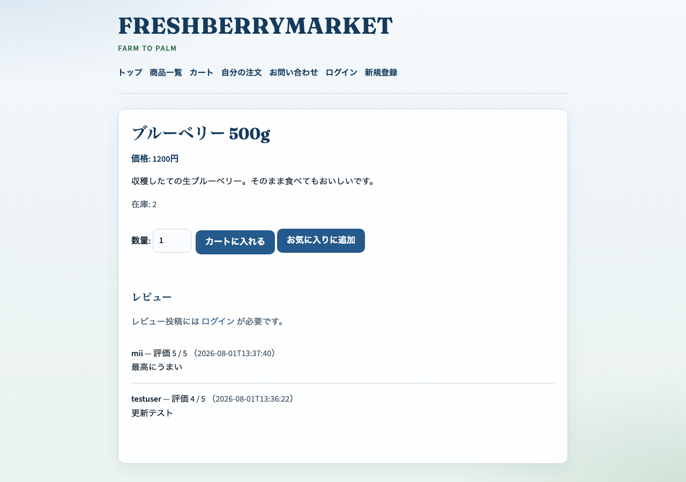

約10分
Farm to Palm
ブルーベリー直売の簡易 EC
丹野美紗 ｜ Flask + SQLite
1分
作った理由：「畑から手のひらへ」を小さな Web ショップとして自分で実装したかった
2分
解決したいこと：注文・在庫・進捗を Web で見えるようにする
3
商品を探してカートに入れ、配送先を登録して注文できる簡易 EC。管理者は商品・在庫・注文も扱えます。
4
強み：最小構成で操作が簡単 ／ 限界：決済・本番運用はこれから
5・1分
無料＝閲覧・注文 ｜ 有料候補＝実メール・決済・複数店舗
6・3分



7・デモ
8・2分
9
学び：現象 → 原因の場所 → 再現、の順で切り分ける
10・1分